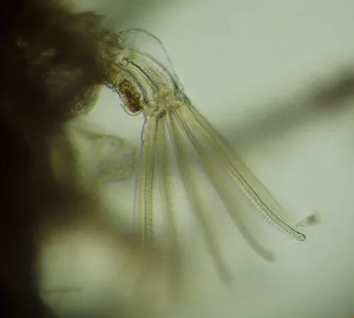

其他无脊椎动物 · 动物界
多毛苔虫 Electra pilosa

在海藻和贝壳表面结成白色网状薄层的群体苔虫，个虫微小、触手冠滤食，是潮间带常见的污损生物。
- 分类
- 门苔藓动物门纲裸唇纲目唇口目科琥珀苔虫科属琥珀苔虫属
- 栖息环境
- 潮间带至水深数十米的岩礁、海藻叶片、贝壳与码头桩柱表面
- 地理分布
- 北大西洋与北太平洋温带寒带海岸，中国北方沿海有记录
- 保护级别
- 无保护问题；为常见污损生物，防除靠清理与防污涂层
物种志
多毛苔虫是群体生活的苔藓动物，每个个体称为个虫，长约零点五毫米，呈长方形或六边形，排列成一层扁平而薄的网状群体，贴在基质表面。群体初看像一层白色的霜或细密的蕾丝，边缘常呈不规则的星芒状扩展。每个个虫前端有一个开口，里面伸出触手冠，触手冠呈马蹄形或圆形，上面排满纤毛，用来捕食。
它分布于北大西洋和北太平洋的温带与寒带海岸，在中国北方沿海有记录，栖息在潮间带至水深数十米的岩礁、海藻叶片、贝壳和码头桩柱上，常与海藻、贻贝和藤壶混生。它靠触手冠上的纤毛制造水流，滤食浮游藻类、细菌和有机颗粒。群体通过出芽增殖，也能产生休眠芽度过不利季节，繁殖期在春夏。它是典型的污损生物，会附着在船底、养殖网箱和水下设施上，增加阻力并影响养殖贝类生长，目前尚无保护级别，防除主要靠定期清理和防污涂层。
形态与习性
- 个虫长约零点五毫米，长方形或六边形
- 群体扁平网状薄层，边缘呈星芒状扩展
- 触手冠马蹄形，纤毛制造水流滤食
- 栖息水层潮间带至水深数十米
- 食性滤食浮游藻类、细菌与有机颗粒
- 危害附着船底与网箱，增加阻力影响养殖
趣味知识
- 它看起来只是一层白霜，其实由成千上万个微小个虫组成。
- 每个个虫都能伸出一圈纤毛，在水中打旋把食物捞进来。
- 它最爱贴在船底和网箱上，是让渔民头疼的污损生物。